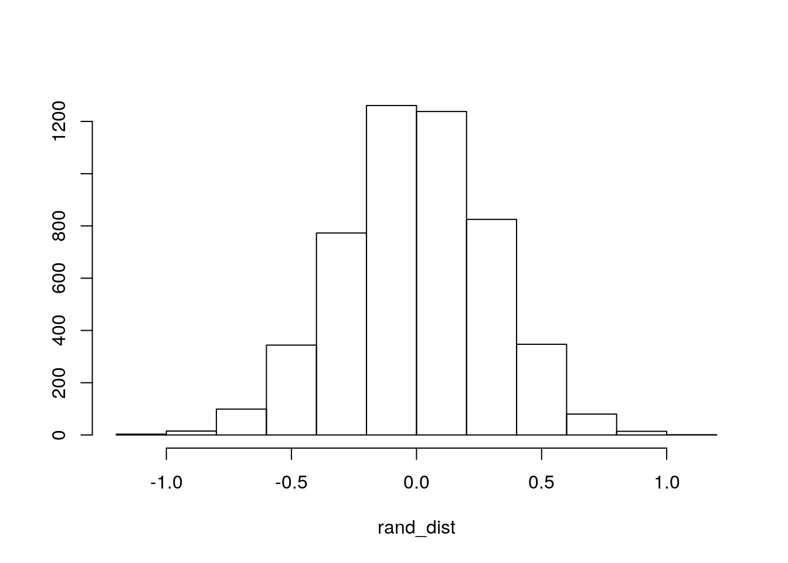
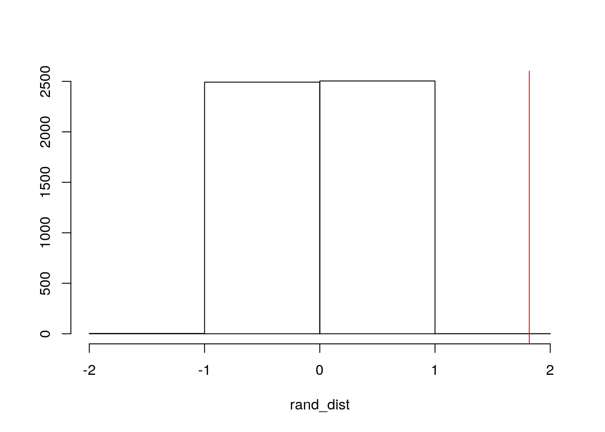
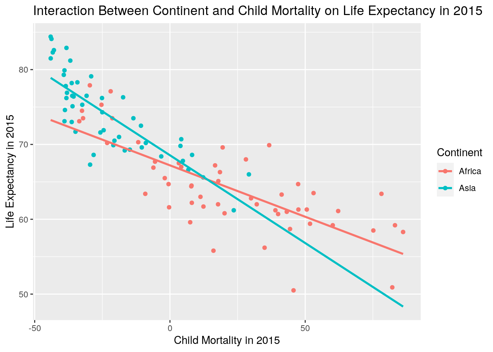
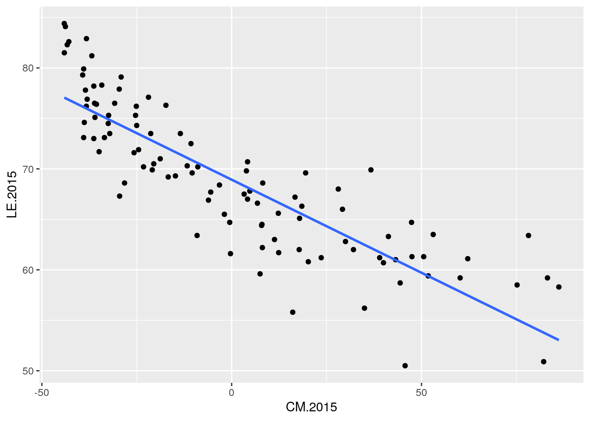
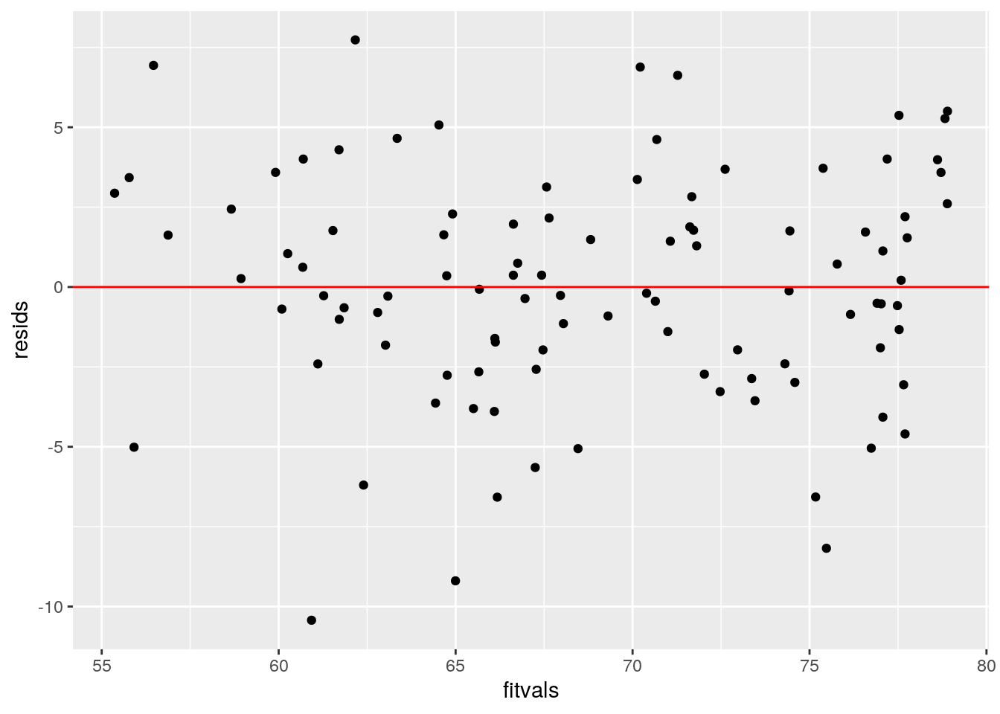
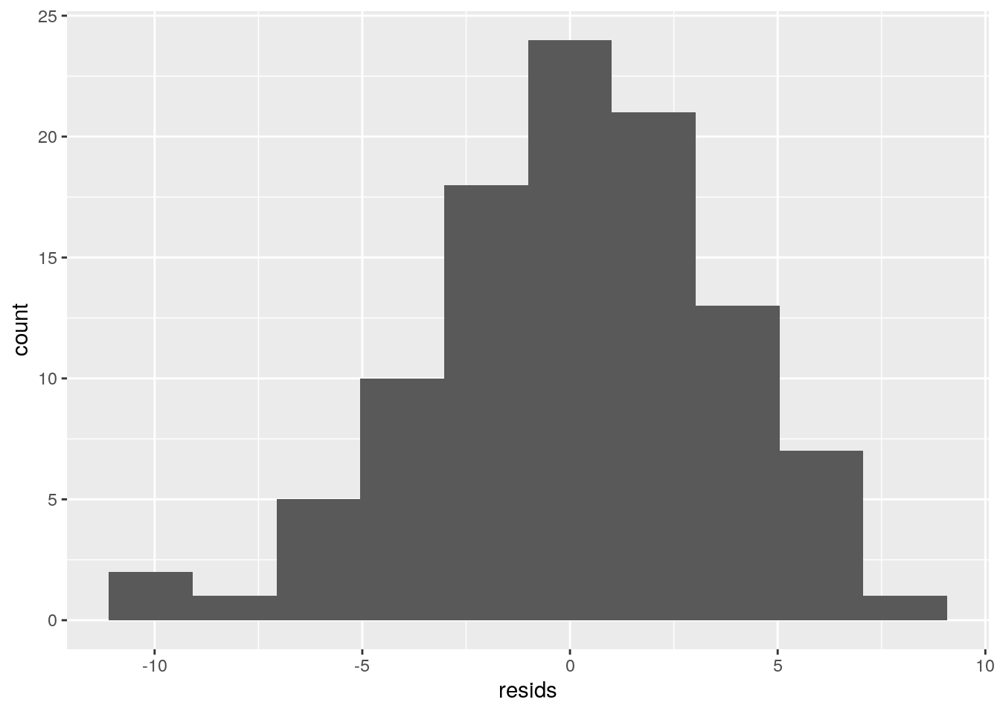
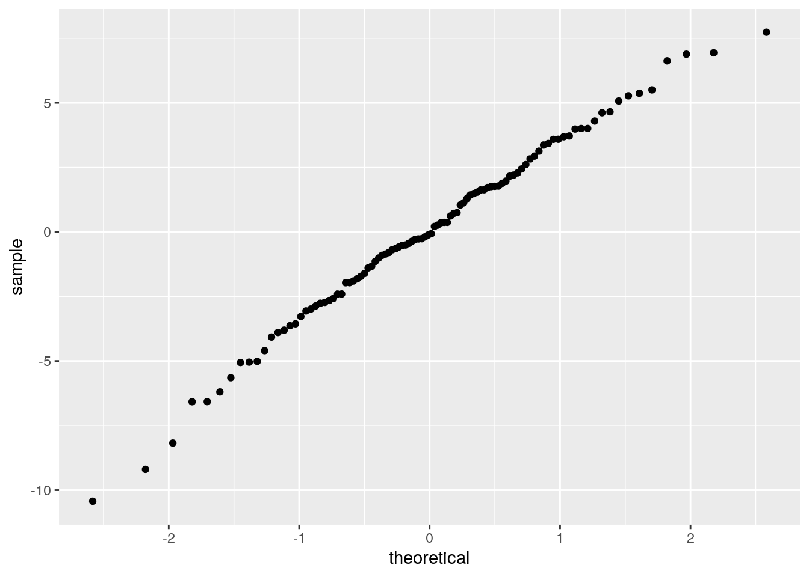
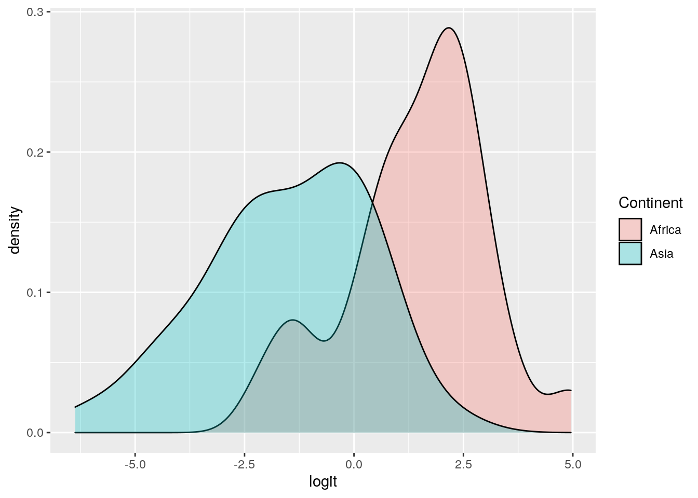
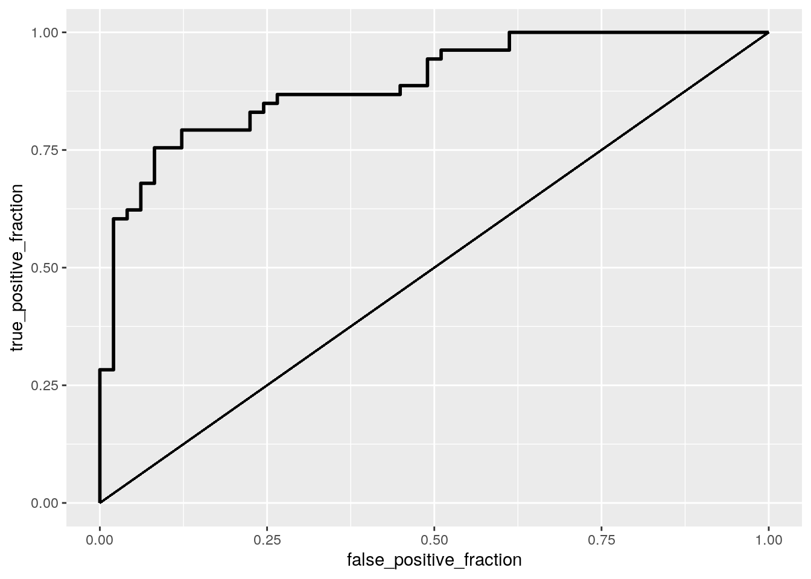

Introduction
The datasets I have chosen were pulled from the gapminder database. The gapminder database compiles different statistics (i.e. income, GDP, population, etc.) about countries around the world. The first dataset contains information about the life expectancy (in years) of countries located in Africa and Asia in 2015. The second dataset contains information about the child mortality rates of countries located in Africa and Asia in 2015. The third dataset contains information about the fertility rates of countries located in Africa and Asia in 2015. The fourth dataset contains information about the CO2 emissions per person of countries located in Africa and Asia in 2015. The fifth dataset contains information about the continent each country is located in (either Africa or Asia) as of 2015. The final dataset will contain 4 numeric variables (life expectancy, child mortality rate,fertility rate, and CO2 Emissions) and 2 categorical variables (country and continent). These datasets were pulled by filtering for the year 2015 and selecting the desired variables. There are a maximum total of 123 observations in the merged dataset. This is because some of the numeric variables were not recorded during 2015 for every single countries, so NAs will be naturally filled in these holes in order to make combining the datasets possible. Furthermore, the NAs were removed from the dataset, and only countries that are located in Africa or Asia were analyzed.
library(lmtest) ## Loading required package: zoo##
## Attaching package: 'zoo'## The following objects are masked from 'package:base':
##
## as.Date, as.Date.numericlibrary(sandwich)
library(plotROC) ## Loading required package: ggplot2library(tidyverse) ## ── Attaching packages ─────────────────────────────────────────────────── tidyverse 1.3.0 ──## ✓ tibble 3.0.3 ✓ dplyr 1.0.1
## ✓ tidyr 1.1.1 ✓ stringr 1.4.0
## ✓ readr 1.3.1 ✓ forcats 0.5.0
## ✓ purrr 0.3.4## ── Conflicts ────────────────────────────────────────────────────── tidyverse_conflicts() ──
## x dplyr::filter() masks stats::filter()
## x dplyr::lag() masks stats::lag()library(MASS) ##
## Attaching package: 'MASS'## The following object is masked from 'package:dplyr':
##
## selectlibrary(glmnet) ## Loading required package: Matrix##
## Attaching package: 'Matrix'## The following objects are masked from 'package:tidyr':
##
## expand, pack, unpack## Loaded glmnet 4.0-2library(ggplot2)
#I am going to import the datasets.
childmortality<-read_csv("child_mortality_0_5_year_olds_dying_per_1000_born.csv")## Parsed with column specification:
## cols(
## Country = col_character(),
## CM.2015 = col_double()
## )fertility <- read_csv("children_per_woman_total_fertility.csv")## Parsed with column specification:
## cols(
## Country = col_character(),
## FR2015 = col_double()
## )lifeexpectancy <- read_csv("life_expectancy_years.csv")## Parsed with column specification:
## cols(
## Country = col_character(),
## LE.2015 = col_double()
## )Continent <- read_csv("Continent.csv")## Parsed with column specification:
## cols(
## Country = col_character(),
## Continent = col_character()
## )CO2<-read.csv("co2_emissions_tonnes_per_person.csv")
#Merging the Datasets
Combined_Data <- childmortality %>% left_join(CO2) %>% left_join(Continent) %>% left_join(fertility) %>% left_join(lifeexpectancy)## Joining, by = "Country"## Joining, by = "Country"
## Joining, by = "Country"
## Joining, by = "Country"Combined_Data <- Combined_Data %>% na.omit()1. MANOVA Test
manova<-manova(cbind(CM.2015, CO2.Emission.2015,FR2015, LE.2015)~Continent,data=Combined_Data)
summary(manova)## Df Pillai approx F num Df den Df Pr(>F)
## Continent 1 0.47646 22.069 4 97 5.639e-13 ***
## Residuals 100
## ---
## Signif. codes: 0 '***' 0.001 '**' 0.01 '*' 0.05 '.' 0.1 ' ' 1A MANOVA test was done in order to find the effect of Continent (location) on child mortality, CO2 emissions, life expectancy, ,and fertility rate in different countries in 2015. The MANOVA showed that there were significant differences in each of the variables (p-value less than 0.5).
#Univariate ANOVAs
summary.aov(manova)## Response CM.2015 :
## Df Sum Sq Mean Sq F value Pr(>F)
## Continent 1 49906 49906 69.911 3.774e-13 ***
## Residuals 100 71386 714
## ---
## Signif. codes: 0 '***' 0.001 '**' 0.01 '*' 0.05 '.' 0.1 ' ' 1
##
## Response CO2.Emission.2015 :
## Df Sum Sq Mean Sq F value Pr(>F)
## Continent 1 723.0 722.98 20.663 1.537e-05 ***
## Residuals 100 3498.9 34.99
## ---
## Signif. codes: 0 '***' 0.001 '**' 0.01 '*' 0.05 '.' 0.1 ' ' 1
##
## Response FR2015 :
## Df Sum Sq Mean Sq F value Pr(>F)
## Continent 1 84.158 84.158 65.167 1.586e-12 ***
## Residuals 100 129.141 1.291
## ---
## Signif. codes: 0 '***' 0.001 '**' 0.01 '*' 0.05 '.' 0.1 ' ' 1
##
## Response LE.2015 :
## Df Sum Sq Mean Sq F value Pr(>F)
## Continent 1 2378.8 2378.82 73.228 1.417e-13 ***
## Residuals 100 3248.5 32.48
## ---
## Signif. codes: 0 '***' 0.001 '**' 0.01 '*' 0.05 '.' 0.1 ' ' 1ANOVA's for each numeric variable were conducted as some follow-up tests to the MANOVA. The univariate ANOVA tests for child mortality, CO2 Emissions, fertility rate, and life expectancy alll had p-values less than 0.05. Thus, all of the tests were significant, and all these variables differ based on continent (location).
#Post-Hoc T-tests
pairwise.t.test(Combined_Data$CM.2015,Combined_Data$Continent,p.adj="none")##
## Pairwise comparisons using t tests with pooled SD
##
## data: Combined_Data$CM.2015 and Combined_Data$Continent
##
## Africa
## Asia 3.8e-13
##
## P value adjustment method: nonepairwise.t.test(Combined_Data$FR2015,Combined_Data$Continent,p.adj="none")##
## Pairwise comparisons using t tests with pooled SD
##
## data: Combined_Data$FR2015 and Combined_Data$Continent
##
## Africa
## Asia 1.6e-12
##
## P value adjustment method: nonepairwise.t.test(Combined_Data$CO2.Emission.2015,Combined_Data$Continent,p.adj="none")##
## Pairwise comparisons using t tests with pooled SD
##
## data: Combined_Data$CO2.Emission.2015 and Combined_Data$Continent
##
## Africa
## Asia 1.5e-05
##
## P value adjustment method: nonepairwise.t.test(Combined_Data$LE.2015,Combined_Data$Continent,p.adj="none")##
## Pairwise comparisons using t tests with pooled SD
##
## data: Combined_Data$LE.2015 and Combined_Data$Continent
##
## Africa
## Asia 1.4e-13
##
## P value adjustment method: nonePost hoc analysis was done by doing pairwise comparisons in order to determine which Continents differ in a specific numeric variable. It seems that Asia and Africa significantly differs in terms of all four variables: child mortality, fertility rates, CO2 Emissions, and life expectancy.
#Probability of At Least One Type-1 Error
1-(1-0.05)^9## [1] 0.3697506There were 9 different hypothesis tests conducted, so the probability of at least 1 Type-1 error is 0.3697506.
#Bonferroni Adjustment
0.05/9## [1] 0.005555556To keep the Type-1 error at 0.05, a bonferroni adjustment was used to correct the significance level to 0.00555556.
#Adjusted Post-Hoc T-tests (Bonferroni)
pairwise.t.test(Combined_Data$CM.2015,Combined_Data$Continent,p.adj="bonf")##
## Pairwise comparisons using t tests with pooled SD
##
## data: Combined_Data$CM.2015 and Combined_Data$Continent
##
## Africa
## Asia 3.8e-13
##
## P value adjustment method: bonferronipairwise.t.test(Combined_Data$FR2015,Combined_Data$Continent,p.adj="bonf")##
## Pairwise comparisons using t tests with pooled SD
##
## data: Combined_Data$FR2015 and Combined_Data$Continent
##
## Africa
## Asia 1.6e-12
##
## P value adjustment method: bonferronipairwise.t.test(Combined_Data$CO2.Emission.2015,Combined_Data$Continent,p.adj="bonf")##
## Pairwise comparisons using t tests with pooled SD
##
## data: Combined_Data$CO2.Emission.2015 and Combined_Data$Continent
##
## Africa
## Asia 1.5e-05
##
## P value adjustment method: bonferronipairwise.t.test(Combined_Data$LE.2015,Combined_Data$Continent,p.adj="bonf")##
## Pairwise comparisons using t tests with pooled SD
##
## data: Combined_Data$LE.2015 and Combined_Data$Continent
##
## Africa
## Asia 1.4e-13
##
## P value adjustment method: bonferroniAfter adjusting the significance level (bonferroni), the mean difference betweeen Africa and Asia is still significant for child mortality, fertility rate, CO2 emissions, and life expectancy.
The assumptions of the ANOVA test (random sample, independent observations, equal variance, etc.) were most likely met, but the assumptions for the ANOVA tests were probably not met. MANOVA tests have a lot more assumptions, such as homogeneity, no multicollinearity, no extreme outliers, multivariate normality, etc. As a result, it would be hard to find any dataset that meets every single one of these assumptions.
2. Randomization Tests
Null and Alternative Hypothesis Null (Ho): The fertility rate is the same in Africa and North America. Alternative (Ha): The fertility rate is different in Africa and North America.
#Test Statistic (mean difference)
mean_diff<-mean(Combined_Data[Combined_Data$Continent=="Africa",]$FR2015)-mean(Combined_Data[Combined_Data$Continent=="Asia",]$FR2015)
#Permutation Loop
rand_dist<-vector()
for(i in 1:5000){
new<-data.frame(FR2015=sample(Combined_Data$FR2015),Cont=Combined_Data$Continent)
rand_dist[i]<-mean(new[new$Cont=="Africa",]$FR2015)-mean(new[new$Cont=="Asia",]$FR2015)}
#P-Value for Permutation Test
mean(rand_dist>mean_diff)*2## [1] 0#Independent T-test for Comparison
t.test(data=Combined_Data,FR2015~Continent)##
## Welch Two Sample t-test
##
## data: FR2015 by Continent
## t = 8.1434, df = 97.996, p-value = 1.253e-12
## alternative hypothesis: true difference in means is not equal to 0
## 95 percent confidence interval:
## 1.375026 2.261115
## sample estimates:
## mean in group Africa mean in group Asia
## 4.361132 2.543061According to the randomization test and two sample t-test, the p-values from both of these tests are each below 0.05. So, the null hypothesis can be rejected. There is a significant difference in child mortality in Africa and Asia.
#Visualizing Null Distribution and Test Statistic
{hist(rand_dist,main="",ylab="");abline(v=mean_diff,col="red")}
{hist(rand_dist,main="",ylab="",breaks=2);abline(v=mean_diff,col="red")} Breaks were added to the second histogram in order to visualize the test statistic. However, it makes the distribution look different, so a histogram containing the distribution and a histogram containing the line of the test statistic were both created.
3. Linear Regression Model
#Mean-Centering Numeric Variables
Combined_Data -> Combined_Data_c
Combined_Data_c$CM.2015 <- Combined_Data_c$CM.2015 - mean(Combined_Data_c$CM.2015,na.rm=T)
#Linear Regression with Interaction
fit1<-lm(LE.2015~Continent*CM.2015,data=Combined_Data_c)
summary(fit1)##
## Call:
## lm(formula = LE.2015 ~ Continent * CM.2015, data = Combined_Data_c)
##
## Residuals:
## Min 1Q Median 3Q Max
## -10.4288 -2.2952 -0.0958 2.2654 7.7346
##
## Coefficients:
## Estimate Std. Error t value Pr(>|t|)
## (Intercept) 67.20517 0.59686 112.598 < 2e-16 ***
## ContinentAsia 1.34653 1.01478 1.327 0.18762
## CM.2015 -0.13739 0.01553 -8.848 3.82e-14 ***
## ContinentAsia:CM.2015 -0.09722 0.03176 -3.061 0.00285 **
## ---
## Signif. codes: 0 '***' 0.001 '**' 0.01 '*' 0.05 '.' 0.1 ' ' 1
##
## Residual standard error: 3.619 on 98 degrees of freedom
## Multiple R-squared: 0.7719, Adjusted R-squared: 0.7649
## F-statistic: 110.5 on 3 and 98 DF, p-value: < 2.2e-16The intercept estimate was 67.20517, which is the average life expectancy when there is no interaction between Continent and child mortality. The coefficient estimate of Continent was 1.34653, which is how much the life expectancy increases when the continent is "Asia". The coefficient estimate of child mortality in 2015 (CM.2015) was -0.13739 which shows how much the life expectancy decreases as the child mortality increases by 1. The coefficient of ContinentAsia:CM.2015 was -0.09722, and shows how much the life expectancy will decrease if the country is located in Asia and the child mortality increases by 1.
ggplot(Combined_Data_c,aes(x=CM.2015,y=LE.2015,group=Continent))+geom_point(aes(color=Continent))+geom_smooth(method="lm",se=F,fullrange=T,aes(color=Continent))+ggtitle("Interaction Between Continent and Child Mortality on Life Expectancy in 2015")+xlab("Child Mortality in 2015")+ylab("Life Expectancy in 2015")## `geom_smooth()` using formula 'y ~ x'
#Checking Assumptions
resids<-fit1$residuals
fitvals<-fit1$fitted.values
#Linearity
ggplot(Combined_Data_c,aes(x=CM.2015,y=LE.2015))+geom_point()+geom_smooth(method="lm",se=F)## `geom_smooth()` using formula 'y ~ x'
#Homoskedasticity from Graph
ggplot()+geom_point(aes(fitvals,resids))+geom_hline(yintercept=0,color='red')
#Homoskedasticity from Breuch-Pagan Test
bptest(fit1)##
## studentized Breusch-Pagan test
##
## data: fit1
## BP = 3.6101, df = 3, p-value = 0.3068#Normality from Graph
ggplot()+geom_histogram(aes(resids),bins=10)
ggplot()+geom_qq(aes(sample=resids))+geom_qq_line()
#Normality from Shapiro-Wilk Test
shapiro.test(resids)##
## Shapiro-Wilk normality test
##
## data: resids
## W = 0.99003, p-value = 0.6541According to the graph, the numeric variable, life expectancy, does seem to have a linear relationship. Additionally, the other two variables (Continent and Child Mortality) are dummy coded and also linear. According to the Breusch-Pagan test, we fail to reject the null hypothesis of homoskedasticity because the p-value (0.3068) was greater than 0.05. According to the Shapiro-Wilk normality test, we fail to reject the null hypothesis of normality beacause the p-value (0.6541) was greater than 0.05. Therefore, the assumptions for linearity, homoskedasticity, and normality are all met.
#Heteroskedasticity Robust Standard Errors
coeftest(fit1,vcov=vcovHC(fit1))##
## t test of coefficients:
##
## Estimate Std. Error t value Pr(>|t|)
## (Intercept) 67.205167 0.656645 102.3463 < 2.2e-16 ***
## ContinentAsia 1.346528 0.920771 1.4624 0.146833
## CM.2015 -0.137393 0.017995 -7.6350 1.512e-11 ***
## ContinentAsia:CM.2015 -0.097223 0.030854 -3.1511 0.002158 **
## ---
## Signif. codes: 0 '***' 0.001 '**' 0.01 '*' 0.05 '.' 0.1 ' ' 1Even though the data met the assumption for homoskedasticity, the regression with heteroskedasticity was redone using robus standard errors. After this was done, the t-values changed very slightly. Furthermore, the p-values change slightly, but not enough to change their previous significance. Overall, the results stayed relatively the same.
#Proportion of Variation in Outcome Explained by my Model
summary(fit1)##
## Call:
## lm(formula = LE.2015 ~ Continent * CM.2015, data = Combined_Data_c)
##
## Residuals:
## Min 1Q Median 3Q Max
## -10.4288 -2.2952 -0.0958 2.2654 7.7346
##
## Coefficients:
## Estimate Std. Error t value Pr(>|t|)
## (Intercept) 67.20517 0.59686 112.598 < 2e-16 ***
## ContinentAsia 1.34653 1.01478 1.327 0.18762
## CM.2015 -0.13739 0.01553 -8.848 3.82e-14 ***
## ContinentAsia:CM.2015 -0.09722 0.03176 -3.061 0.00285 **
## ---
## Signif. codes: 0 '***' 0.001 '**' 0.01 '*' 0.05 '.' 0.1 ' ' 1
##
## Residual standard error: 3.619 on 98 degrees of freedom
## Multiple R-squared: 0.7719, Adjusted R-squared: 0.7649
## F-statistic: 110.5 on 3 and 98 DF, p-value: < 2.2e-16According to the R^2 indicator, the proportion of variation in Life Expectancy explained by the overall model is 0.7719. The adjusted R-squared, which is more conservative, shows that the proportion of variation in life expectncy explained by the model is 0.7649.
4. Bootstrapping Standard Errors
#Boostrapped SE
samp_distn<-replicate(5000,{
boot_dat<-boot_dat<-Combined_Data_c[sample(nrow(Combined_Data_c),replace=TRUE),]
fit3<-lm(LE.2015~Continent*CM.2015,data=boot_dat)
coef(fit3)
})
samp_distn%>%t%>%as.data.frame%>%summarize_all(sd)## (Intercept) ContinentAsia CM.2015 ContinentAsia:CM.2015
## 1 0.6371097 0.863469 0.01754492 0.02904867#Bootstrapped SE (Resampling Residuals)
fit3<-lm(LE.2015~Continent*CM.2015,data=Combined_Data_c)
resids<-fit3$residuals
fitted<-fit3$fitted.values
resid_resamp<-replicate(5000,{
new_resids<-sample(resids,replace=TRUE)
Combined_Data_c$new_y<-fitted+new_resids
fit4<-lm(new_y~Continent*CM.2015,data=Combined_Data_c)
coef(fit4)
})
resid_resamp%>%t%>%as.data.frame%>%summarize_all(sd)## (Intercept) ContinentAsia CM.2015 ContinentAsia:CM.2015
## 1 0.5885519 1.004597 0.01532157 0.03113997Since the data was not completely normal, it was important to rerun the model with bootstrapped standard errors. The bootstraped standard errors were all lower than the robust hetereskedastic standard errors. However, when comparing the original standard errors to the bootstrapped standard errors, the boostrapped errors for the Intercept, CM.2015, and ContinentAsia:CM.2015 were all greater than the original standard errors for those same values while the boostrapped error for Contientn Asia was less than the original standard error for that same value. The bootsrapped standard error using residual resampling were both larger (Continent) and smaller (intercept and child mortality) compared to the bootstrapped standard errors using row sampling. For the residual resampling standard errors, similar to before, the standard errors for some variables were larger than some of the heteroskedastic standard errors. However, the normal standard errors were all greater than the residual resampling standard errors. In our case, we should probably use the one with the largest error between the two boostrapped errors, which would approximately be the residual resampling error. This would allow us to account for as much error as possible.
5. Logistic Regression Model
#Preparing the Data
Combined_Data_c<-Combined_Data_c%>%mutate(y=as.numeric(Continent=="Africa"))
#Logistic Regression
fit5<-glm(y~CO2.Emission.2015+LE.2015,data=Combined_Data_c,family=binomial(link="logit"))
coeftest(fit5)##
## z test of coefficients:
##
## Estimate Std. Error z value Pr(>|z|)
## (Intercept) 17.923401 4.030907 4.4465 8.728e-06 ***
## CO2.Emission.2015 -0.095521 0.083680 -1.1415 0.2537
## LE.2015 -0.254660 0.059334 -4.2920 1.771e-05 ***
## ---
## Signif. codes: 0 '***' 0.001 '**' 0.01 '*' 0.05 '.' 0.1 ' ' 1exp(-0.095521)## [1] 0.9088993exp(-0.254660)## [1] 0.77518While Controlling for life expectancy, there is not a significant effect of CO2 emissions per person based on the continent. However, if it were significant, every 1 unit increase in CO2 emissions increases the odds of the country being found in Africa by 0.9088993. While controlling for CO2 emissions, there is a significant effect of life expectancy on the location (continent) of the country. Every 1 unit increase in life expectancy increases the odds of the country being found in Africa by 0.77518. In both cases, the odds of the country beingn found in Africa increases as the CO2 emissions and the life expectancy go up.
Combined_Data_c$prob<-predict(fit5,type="response")
table(predict=as.numeric(Combined_Data_c$prob>.5),truth=Combined_Data_c$y)%>%addmargins## truth
## predict 0 1 Sum
## 0 38 9 47
## 1 11 44 55
## Sum 49 53 102#Accuracy
(38+44)/102## [1] 0.8039216#Sensitivity
(44)/53## [1] 0.8301887#Specificity
(38)/49## [1] 0.7755102#Precision
(44)/55## [1] 0.8From the confusion matrix, the accuracy, or number of predicted countries located in Asia which are actually located in Asia, is 0.8039216. The sensitivity, or the true positive rate, is 0.8301887. The specificity, or true negative rate, is 0.87755102. Finally, the precisions, or proportion of predicted countries located in Africa which are actually located in Africa, is 0.8.
#Density of Log-Odds Plot
Combined_Data_c$odds<-(Combined_Data_c$prob)/(1-Combined_Data_c$prob)
Combined_Data_c$logit<-log(Combined_Data_c$odds)
ggplot(Combined_Data_c)+geom_density(aes(logit,fill=Continent),alpha=0.3)
#ROC Curve and AUC
ROCplot<-ggplot(Combined_Data_c)+geom_roc(aes(d=y,m=prob),n.cuts=0)+geom_segment(aes(x=0,xend=1,y=0,yend=1))
ROCplot
calc_auc(ROCplot)## PANEL group AUC
## 1 1 -1 0.8914132The AUC of the model was 0.8914132. This is the probability of selecting a country located in Asia with a higher predictio than a country located in Africa, while taking into account the life expectancy and the CO2 emissions per person. This is a fairly good AUC, meaning that CO2 emissions per person and life expectancy are good predictors for a country continental location.
6. Logistic Regression of ALL Variables
#Preparing the Data
Combined_Data_c<-Combined_Data_c%>%mutate(y=as.numeric(Continent=="Africa"))
#Logistic Regression
fit6<-glm(y~CO2.Emission.2015+LE.2015+FR2015+CM.2015,data=Combined_Data_c,family=binomial(link="logit"))
coeftest(fit6)##
## z test of coefficients:
##
## Estimate Std. Error z value Pr(>|z|)
## (Intercept) 8.775934 5.858426 1.4980 0.13413
## CO2.Emission.2015 -0.052140 0.077675 -0.6713 0.50206
## LE.2015 -0.146768 0.084037 -1.7465 0.08073 .
## FR2015 0.483028 0.357876 1.3497 0.17711
## CM.2015 0.011999 0.021871 0.5486 0.58328
## ---
## Signif. codes: 0 '***' 0.001 '**' 0.01 '*' 0.05 '.' 0.1 ' ' 1Combined_Data_c$prob<-predict(fit6,type="response")
table(predict=as.numeric(Combined_Data_c$prob>.5),truth=Combined_Data_c$y)%>%addmargins## truth
## predict 0 1 Sum
## 0 43 8 51
## 1 6 45 51
## Sum 49 53 102#Accuracy
(43+45)/102## [1] 0.8627451#Sensitivity
(45)/53## [1] 0.8490566#Specificity
(43)/49## [1] 0.877551#Precision
(45)/51## [1] 0.8823529The accuracy, or number of predicted countries located in Asia which are actually located in Asia, is 0.8627451. The sensitivity, or the true positive rate, is 0.8490566. The specificity, or true negative rate, is 0.877551. Finally, the precisions, or proportion of predicted countries located in Africa which are actually located in Africa, is 0.8823529.
#Class Diagnostics Function
class_diag<-function(probs,truth){
tab<-table(factor(probs>.5,levels=c("FALSE","TRUE")),truth)
acc=sum(diag(tab))/sum(tab)
sens=tab[2,2]/colSums(tab)[2]
spec=tab[1,1]/colSums(tab)[1]
ppv=tab[2,2]/rowSums(tab)[2]
if(is.numeric(truth)==FALSE & is.logical(truth)==FALSE) truth<-as.numeric(truth)-1
ord<-order(probs,decreasing=TRUE)
probs<-probs[ord];truth<-truth[ord]
TPR=cumsum(truth)/max(1,sum(truth))
FPR=cumsum(!truth)/max(1,sum(!truth))
dup<-c(probs[-1]>=probs[-length(probs)],FALSE)
TPR<-c(0,TPR[!dup],1);FPR<-c(0,FPR[!dup],1)
n<-length(TPR)
auc<-sum( ((TPR[-1]+TPR[-n])/2)*(FPR[-1]-FPR[-n]) )
data.frame(acc,sens,spec,ppv,auc)
}
#10-Fold CV
set.seed(1234)
k=10
data1<-Combined_Data_c[sample(nrow(Combined_Data_c)),]
folds<-cut(seq(1:nrow(Combined_Data)),breaks=k,labels=F)
diags<-NULL
for(i in 1:k){
train<-data1[folds!=i,]
test<-data1[folds==i,]
truth<-test$y
fit<-glm(y~CO2.Emission.2015+LE.2015+FR2015+CM.2015,data=train,family="binomial")
probs<-predict(fit,newdata = test,type="response")
diags<-rbind(diags,class_diag(probs,truth))
}
apply(diags,2,mean)## acc sens spec ppv auc
## 0.8127273 0.8309524 0.8268254 0.8065476 0.8835317The accuracy, sensitivity, specificity, precision, and auc were 0.8127273, 0.8309524, 0.8268254, 0.8065476, and 0.8835317, respectively. The AUC was still relativelyt good (0.8835317), but was lower than found previously (0.8914132). However, the difference was not that significant, but it could be likely that this is a sign of overfitting.
#Prepping Dataset Variable
Combined_Data_c$Country=NULL
Combined_Data_c$Continent=NULL
Combined_Data_c$prob=NULL
Combined_Data_c$odds=NULL
Combined_Data_c$logit=NULL
#Linear Regression
fit7<-lm(y~.,data=Combined_Data_c,family="binomial")## Warning: In lm.fit(x, y, offset = offset, singular.ok = singular.ok, ...) :
## extra argument 'family' will be disregarded#LASSO Regression
y<-as.matrix(Combined_Data_c$y)
x<-model.matrix(fit7)
cv<-cv.glmnet(x,y,family="binomial")
lasso<-glmnet(x,y,family="binomial",lambda=cv$lambda.1se)
coef(lasso)## 6 x 1 sparse Matrix of class "dgCMatrix"
## s0
## (Intercept) 4.645814434
## (Intercept) .
## CM.2015 0.005598123
## CO2.Emission.2015 .
## FR2015 0.261700679
## LE.2015 -0.079079518After running a lasso regression on the linear model predicting the country's continent location from all the other variables, the variables that were significant were child mortality, fertility rate, and life expectancy. Therefore, all of these variables will be used in the regression below while the other "noise" variables will be removed from the dataset.
Combined_Data2<-data.frame(Combined_Data$CM.2015,Combined_Data$FR2015,Combined_Data$LE.2015,Combined_Data_c$y)
#10-Fold CV (Dataset already contiains significant variables)
set.seed(1234)
k=10
data1<-Combined_Data2[sample(nrow(Combined_Data2)),]
folds<-cut(seq(1:nrow(Combined_Data2)),breaks=k,labels=F)
diags<-NULL
for(i in 1:k) {
train<-data1[folds !=i,]
test<-data1[folds==i,]
truth<-test$Combined_Data_c.y
fit<-lm(Combined_Data_c.y~.,data=train,family="binomial")
probs<-predict(fit,newdata=test,type="response")
diags<-rbind(diags,class_diag(probs,truth))
}## Warning: In lm.fit(x, y, offset = offset, singular.ok = singular.ok, ...) :
## extra argument 'family' will be disregarded
## Warning: In lm.fit(x, y, offset = offset, singular.ok = singular.ok, ...) :
## extra argument 'family' will be disregarded
## Warning: In lm.fit(x, y, offset = offset, singular.ok = singular.ok, ...) :
## extra argument 'family' will be disregarded
## Warning: In lm.fit(x, y, offset = offset, singular.ok = singular.ok, ...) :
## extra argument 'family' will be disregarded
## Warning: In lm.fit(x, y, offset = offset, singular.ok = singular.ok, ...) :
## extra argument 'family' will be disregarded
## Warning: In lm.fit(x, y, offset = offset, singular.ok = singular.ok, ...) :
## extra argument 'family' will be disregarded
## Warning: In lm.fit(x, y, offset = offset, singular.ok = singular.ok, ...) :
## extra argument 'family' will be disregarded
## Warning: In lm.fit(x, y, offset = offset, singular.ok = singular.ok, ...) :
## extra argument 'family' will be disregarded
## Warning: In lm.fit(x, y, offset = offset, singular.ok = singular.ok, ...) :
## extra argument 'family' will be disregarded
## Warning: In lm.fit(x, y, offset = offset, singular.ok = singular.ok, ...) :
## extra argument 'family' will be disregardeddiags %>% summarize_all(mean)## acc sens spec ppv auc
## 1 0.8327273 0.8309524 0.8601587 0.844881 0.8740079The out-of-sample accuracy for this model is 0.8327273. The accuracy for the model in question 5 was 0.8039216, so the accuracy improved slightly. However, it is not likely that this change was significant. The AUC from the logistic regressions was 0.8914132. The AUC in this regression decreased to 0.8740079. However, it is not likely that this change was significant at all.